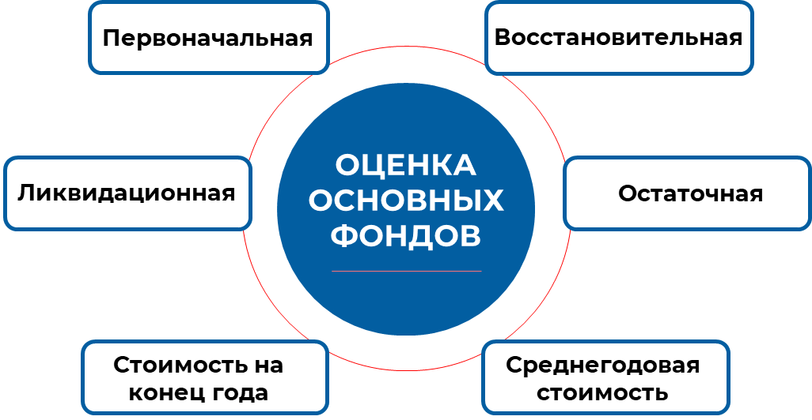
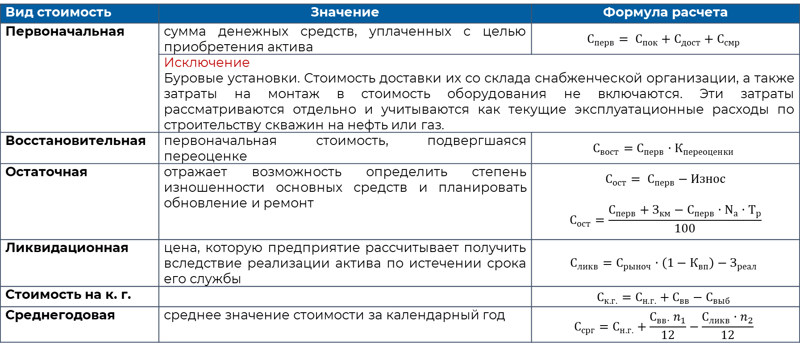

Стоимостная оценка основных средств
Основные фонды являются важным компонентом производственного процесса, их участие в деятельности предприятий приводит к их постепенному износу. В течение этого периода условия производства также могут изменяться, что требует оценки стоимости основных фондов.
Виды денежной оценки основных фондов

Таблица 2 – Формы расчета видов стоимости основных фондов

Важно отметить, что оценка основных фондов является важной задачей для предприятий, так как это позволяет определить их стоимость и состояние. Эта информация может быть использована для принятия решений о модернизации, замене или ремонте основных фондов, а также для учета их стоимости в бухгалтерии и отчетности предприятия.